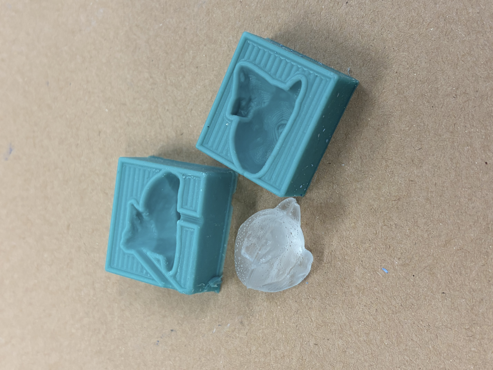
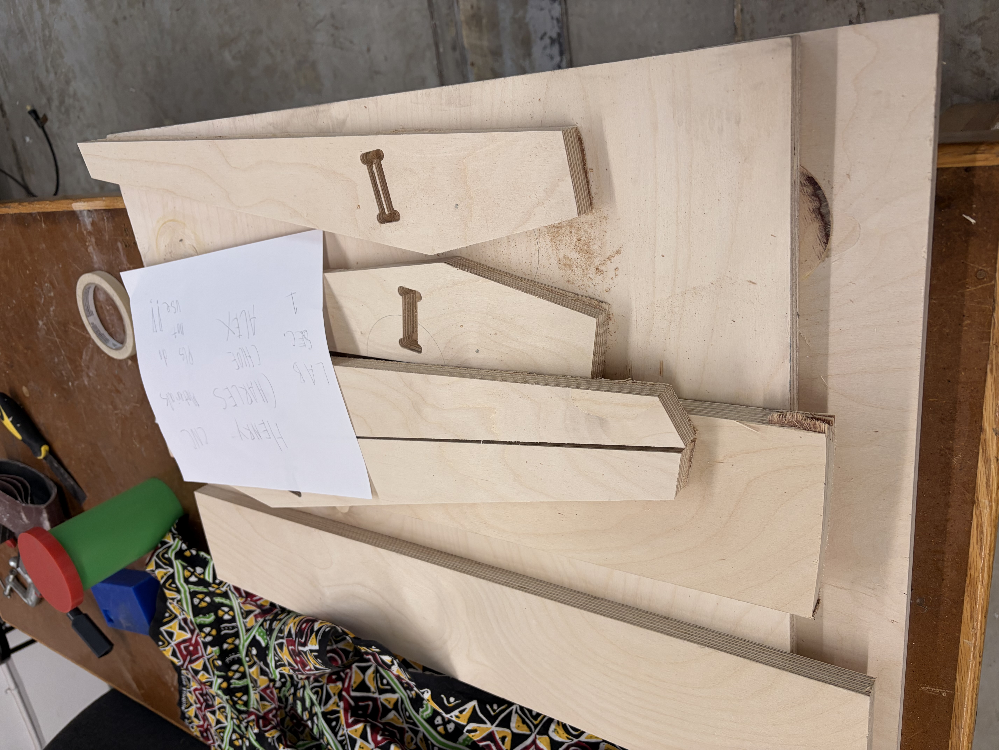
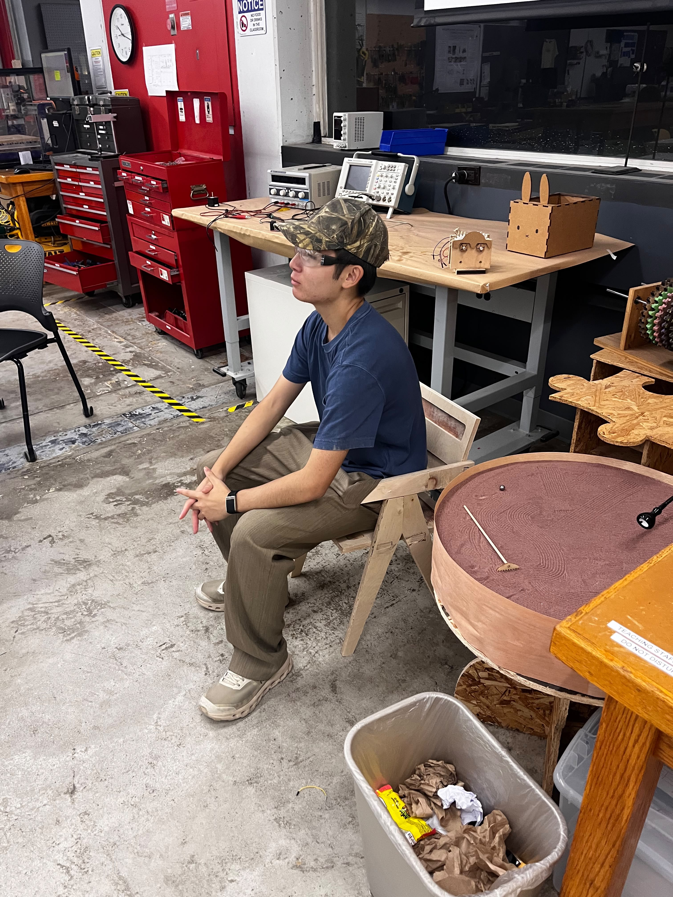
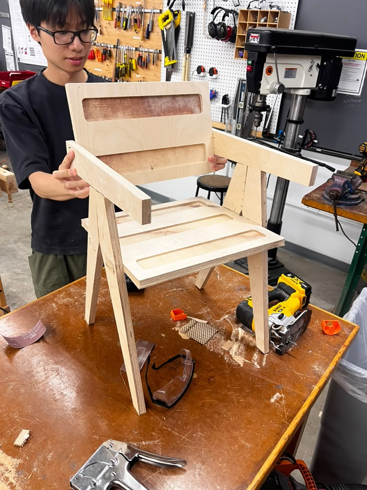

Design and fabricate something using one of the CNC machines in the lab. Make sure to include some kind of post processing in your design.




My group consisted of Charles Jian, Alex, Hao, and myself. because we had four people, we decided to divide, and me and Charles Jian were in the group of making and casting a mold. I was determind to make a gift for someone, so I learned how to use blender and created a small creature. Actually, both the learning blender and the learning how to fail the embroidery machine was most of my time apparently. With help from Victor and Hannah, I was able to get a mold and casted intot he said creature. On the other hand, Charles, Hao, and Alex worked on the CNC, where they cutted out a chair.